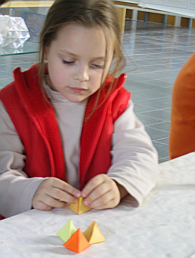
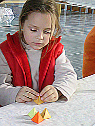

Weichzeichner und Scharfzeichner
Auch Pixelbilder kann man als hochdimensionale Vektoren auffassen.
Hierbei steht jeder einzelne rot/grün/blau Eintrag eines jeden Pixels für
eine Komponente des Vektors. Man hat es also sehr schnell mit "millionendimensionalen" Vektoren zu tun.
Die einzelnen Pixel eines Pixelbildes lassen sich auch als drei-dimensionale Einträge in einer Matrix auffassen.
Zum Beispiel besteht ein Pixelbild der Auflösung 1024 x 768 aus $ 1024\cdot 768= 786432$ vielen Bildpunkten. Jeder Bildpunkt (Pixel) lässt sich durch die Koordinaten (i,j) seiner Position im Bild bestimmen. Somit definieren alle Pixel dieses Pixelbildes eine (1024x768)-Matrix, welche wiederum als $ 1024\cdot 768= 786432$-dimensionaler Vektor aufgefasst werden kann.
Lineare Abbildungen in diesem Vektorraum können sehr nützlich sein. Eine solche Abbildung
ersetzt jeden einzelnen Bildpunkt durch das (evtl. noch skalierte) gewichtete Mittel anderer Punkte.
Natürlich gibt es eine extrem große Schar solcher Abbildungen. Es sind jedoch solche von speziellem Interesse,
welche einen Punkt durch das gewichtete Mittel seiner Nachbarn ersetzen.
Es ist offensichtlich, dass man hiermit ein Bild z.B. einfach "verschmieren" (Weichzeichnen) kann.
In der untenstehenden Transformation wurden die neuen Punkte gemäß der Formel
\[p_{i,j}={1\over 9}(p_{i,j}\;+\;p_{i-1,j}\;+\;p_{i-1,j-1}\;+\;p_{i,j-1}\;+\;p_{i+1,j-1}\;+\;p_{i+1,j}\;+\;p_{i+1,j+1}\;+\;p_{i,j+1}\;+\;p_{i-1,j+1})\]
bestimmt. Die Indizes des Punktes geben dabei die Position des Punktes im Bild an.

Weichzeichnen
Es ist sehr überraschend, dass man durch Wahl geeigneter Gewichte auch eine
Schärfung des Bildes erreichen kann.
Ersetzt man nach folgender Regel
\[ p_{i,j}={1\over 2}( 10p_{i,j}\;-\; p_{i-1,j}\;-\; p_{i-1,j-1}\;-\; p_{i,j-1}\;-\; p_{i+1,j-1}\;-\; p_{i+1,j}\;-\; p_{i+1,j+1}\;-\; p_{i,j+1}\;-\; p_{i-1,j+1} ) \]
so ergibt sich der unten gezeigte Schärfungs-Effekt.

Scharfzeichnen